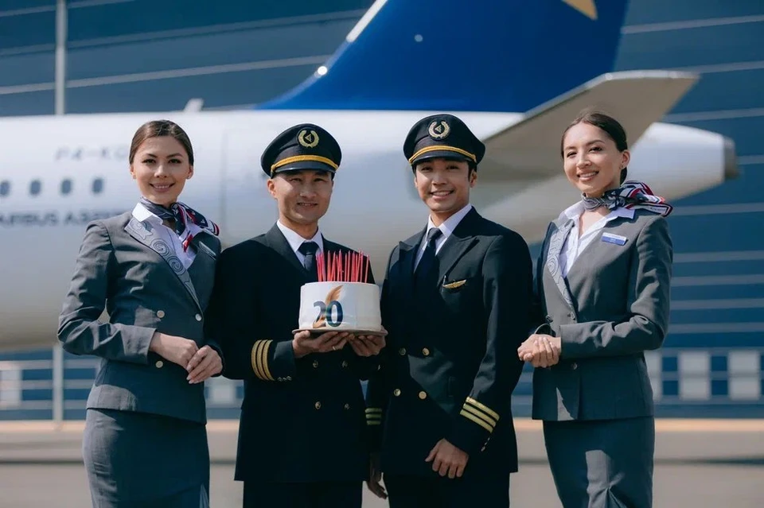

My career starts at the age of 21. From the moment I entered training abroad as an aircraft pilot. I learned quickly and it was not difficult to get the coveted license. I signed a contract with Air Astana and officially became the second pilot of the A-320 aircraft.

I received a good salary, loved every day of my work and quickly rose to the position of the chief pilot of the vessel. The company provides good career growth and after 10 years I receive an offer for the position of personal pilot of the President of the Republic of Kazakhstan. Of course, I agreed without hesitation. I have a lot achievements and acknowledgments, which I am very proud of. In total, I have about 16,000 flight hours.
From Cyber Security to Pilot
or how many times I have my profession before success